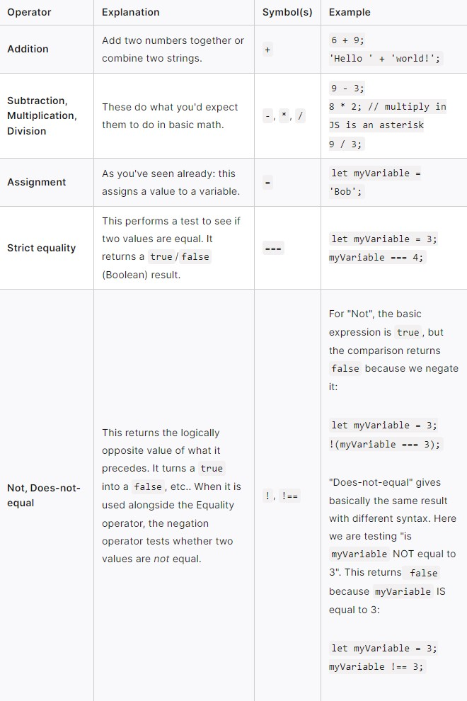

HTML
- The ul element makes an unorderlist in which you use the li elemnt to add bullet points.
- The head element contains information about the webpage.
- The body element represents the visible content shown to the user.
- The header section is not visible on the site and contain meta data for SEO.
CSS
- Enter your CSS notes here
Git
SET UP
- (git config --global user.name “[firstname lastname]”)
set a name that is identifiable for credit when review version history
- git config --global user.email “[valid-email]”)
set an email address that will be associated with each history marker
- (git config --global color.ui auto)
set automatic command line coloring for Git for easy reviewing
- (git init)
initialize an existing directory as a Git repository
- (git clone [url])
retrieve an entire repository from a hosted location via URL
STAGE & SNAPSHOT
- git status)
show modified files in working directory, staged for your next commit
- (git add [file])
add a file as it looks now to your next commit (stage)
- (git reset [file])
unstage a file while retaining the changes in working directory
- (git diff)
diff of what is changed but not staged
- (git diff --staged)
diff of what is staged but not yet commited
- (git commit -m “[descriptive message]”)
commit your staged content as a new commit snapshot
BRANCH & MERGE
- (git branch)
list your branches. a * will appear next to the currently active branch
- (git branch [branch-name])
create a new branch at the current commit
- (git checkout)
switch to another branch and check it out into your working directory
- (git merge [branch])
merge the specified branch’s history into the current one
- (git log)
show all commits in the current branch’s history
INSPECTS & COMPARE
- (git log)
show the commit history for the currently active branch
- (git log branchB..branchA
show the commits on branchA that are not on branchB
- (git log --follow [file])
show the commits that changed file, even across renames
- (git diff branchB...branchA)
show the diff of what is in branchA that is not in branchB
- (git show [SHA])
show any object in Git in human-readable format
SHARE & UPDATE
- (git remote add [alias] [url])
add a git URL as an alias
- (git fetch [alias])
fetch down all the branches from that Git remote
- (git merge [alias]/[branch])
merge a remote branch into your current branch to bring it up to date
- (git push [alias] [branch])
Transmit local branch commits to the remote repository branch
- (git pull)
fetch and merge any commits from the tracking remote branch
JavaScript
Variables are containers that store values. You start by declaring a variable with the let keyword, followed by the name you give to the variable.
